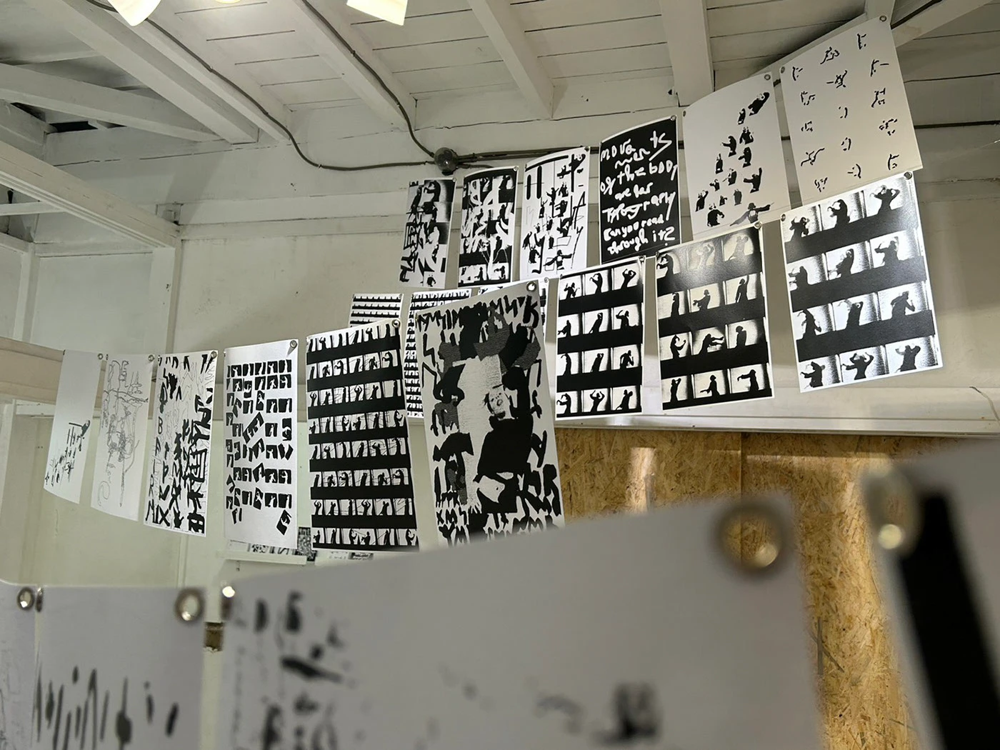

Tsukumo
Solo Exhibition · PUNIO Gallery · Kita-Senju, Tokyo · 2023
Tsukumo refers to ninety-nine and brings together 99 hand-made works as an archive of asemic writing. Presented at PUNIO Gallery in Kita-Senju, Tokyo, the solo exhibition combined experimental typography, installation, film, dance, and participatory workshops. It was organized and curated by Chihiro Kusakari with PUNIO Gallery founders and curators Sora Hoshino, Ren Suganuma, and Daiya Kitahara.